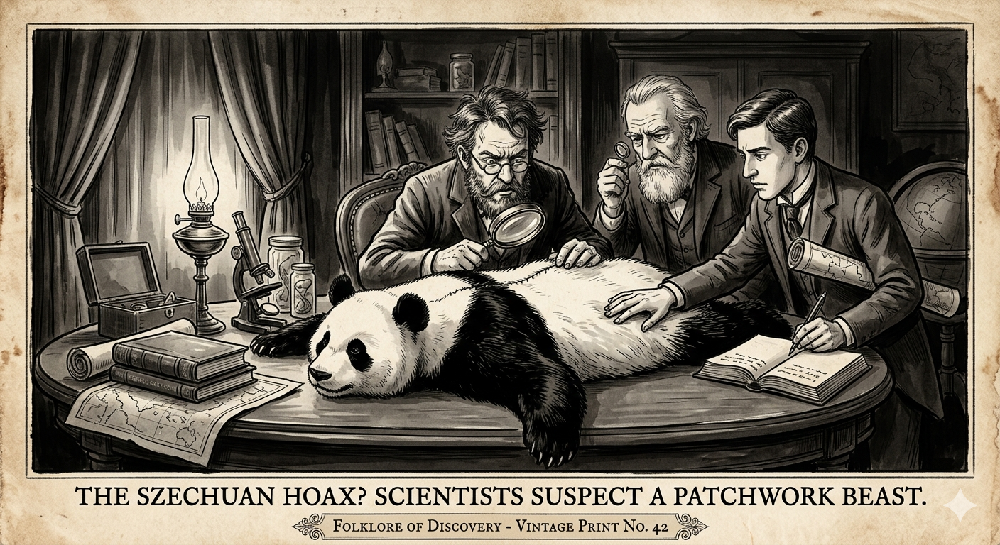

הפנדה הענקית
מ"מתיחת העורות התפורים" אל דוב הרפאים של הרי סין
מחקר אטימולוגי: מקור השמות
השם המדעי הטקסונומי: Ailuropoda melanoleuca
השם המדעי של הפנדה מתאר למעשה את האנטומיה הייחודית שלה ואת הצבעים המנוגדים, והוא מורכב מחיבור של מונחים מיוונית עתיקה:
- Ailuropoda: הלחם של המילים היווניות Ailouros (חתול) ו-Pous / Poda (רגל/כף רגל). הסיבה לכך היא שהאישונים של הפנדה (כמו של חתול) הם בצורת חריץ אנכי, בניגוד לאישונים העגולים של שאר הדובים. כלומר: "בעל רגלי (או מאפייני) חתול".
- melanoleuca: הלחם של המילים Melas (שחור) ו-Leukos (לבן). התרגום המלא של השם המדעי הוא: "דמוי-החתול השחור-לבן".
השם הנפוץ: Panda (פנדה)
- מקור השם (נפאלית): המקור המדויק לוט בערפל, אך החוקרים סבורים שהמילה מגיעה מהשפה הנפאלית, מהמילה Ponya, שפירושה "אוכל במבוק" או "חיה בעלת כרית כף רגל שנועדה לאחוז במבוק". מעניין לציין שהשם ניתן במקור לפנדה האדומה, ורק מאוחר יותר הועבר ל"פנדה הענקית". בסינית היא נקראת Dàxióngmāo (大熊猫), שפירושו "דוב-חתול גדול".
התגלית שהייתה "טובה מכדי להיות אמיתית"
עד אמצע המאה ה-19, המדע המערבי לא ידע דבר על קיומו של יונק גדול בשחור-לבן בהרי סין. ציידים ונוסעים הביאו עימם שמועות על "דוב לבן" מסתורי שחי ביערות במבוק סבוכים בטיבט ובסצ'ואן.
כאשר הגיעו העורות הראשונים של פנדות לאירופה, הקהילה המדעית בלונדון ובפריז הייתה משוכנעת שמדובר בזיוף מתוחכם. בדיוק כמו במקרה של הברווזן, חוקרים האמינו שסוחרים סינים תפרו יחד חתיכות של עור דוב שחור ועור של דוב לבן (או כלב גדול) כדי למכור אותם ביוקר כמוצר פלאי.
המיתוס הופרך מדעית רק בשנת 1869, כאשר המיסיונר, הזואולוג והבוטנאי הצרפתי, האב ארמאן דוד (Armand David, 1826–1900), נסע למזרח סין. הוא רכש שלד שלם ופרווה מצייד מקומי, שלח אותם למוזיאון להיסטוריה של הטבע בפריז, והוכיח שמפלצת ה"שחור-לבן" היא מין אמיתי לחלוטין של דוב שהסתגל לחיים נסתרים.
מיתוס המתיחה מול המציאות האבולוציונית
האגדה: מפלצת שנתפרה מעורות שונים, או "דוב רפאים" קטלני המסוגל ללעוס מתכת (כך האמינו חלק מהמקומיים בשל שיני הפנדה החזקות שריסקו סירי נחושת של נוודים).
המציאות: הפנדה היא דוב שהחליט, מסיבות אבולוציוניות, להפוך לצמחוני כמעט מוחלט, תוך פיתוח התאמות גופניות ביזאריות כדי לשרוד את התזונה הדלה הזו.
מאפיינים ביולוגיים: טורף שאוכל עשב
- אגודל מדומה (Pseudo-thumb): לפנדה אין אגודלים אמיתיים. במקום זאת, עצם שורש כף היד (העצם הססמואידית) שלה התארכה והפכה ל"אגודל שישי" גמיש, שמאפשר לה לאחוז בגבעולי במבוק עבים בקלות.
- מערכת עיכול של טורף: מבחינה אנטומית, קיבת הפנדה היא של קרניבור (טורף בשר). אין לה לה מספר קיבות כמו לפרה כדי לעכל תאית. לכן, היא מנצלת רק כ-17% מהערך התזונתי של הבמבוק, ונאלצת לאכול עד 38 ק"ג ממנו בכל יום!
- כוח נשיכה: כדי לרסק את הצינורות הקשים של הבמבוק, הפנדה פיתחה גולגולת עצומה ושרירי לסת חזקים מרוב הדובים, המעניקים לה כוח נשיכה עוצמתי השווה לזה של יגואר.
זואולוגיה ומחזור חיים (תעודת זהות)
תיעוד חזותי (לחץ להגדלה)

המיתוס: מתיחת "העורות התפורים"
המציאות: הדוב אוכל העשב